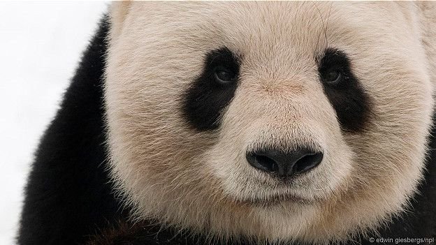
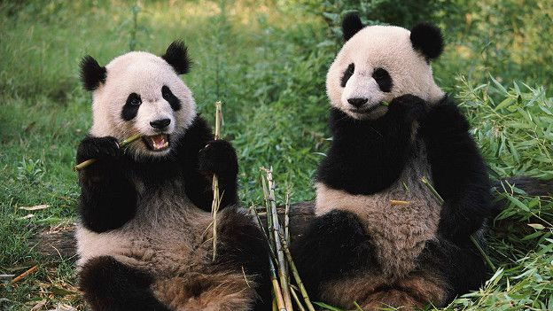

"Отак вони й вимерли". Чому панді важко знайти собі пару
Обмежена здатність розрізнити партнера на відстані створює великим пандам серйозні труднощі в період спарювання.
До такого висновку дійшли вчені, які вивчали особливості спілкування великих
панд.
Дослідники виявили, що панди можуть розрізняти один одного за
характерним
для
них меканням, що подібне до овечого, тільки на відстані до 20 метрів.
При цьому стать потенційного партнера вони можуть розпізнати, тільки якщо
тварина наважиться підійти ще ближче - на 10 метрів.Багатьом
іншим тваринам
в
цьому сенсі легше: наприклад, слони спілкуються на відстані до кілометра.
Дослідники записали мекання панд і перевірили, на якій відстані його чути в
заростях бамбука.
З'ясувалося, що ці симпатичні звірі, що живуть в бамбукових лісах, лише на
близькій відстані можуть визначити, він це чи вона, та зрозуміти, чи
зустрічалися вони вже раніше.
"Як показують наші дослідження, коли панда виявляє потенційного партнера,
звукові комунікації між ними дійсно спостерігають лише на дуже близькій
відстані", - говорить вчений Зоологічного інституту Сан-Дієго Бенджамін
Чарльтон.
Самотність панди
Ці дослідження, опубліковані в журналі Scientific Reports, можуть пролити світло на особливості розмноження панд. Пошук партнера і спарювання можуть бути досить складною справою для панди. Ці тварини переважну частину життя проводять на самоті. Поза сезоном спарювання зустрічі з іншими пандами рідкісні. Стать, розміри і гормональний стан потенційного партнера тварини можуть визначити по запаху. Але для великих панд в сезон парування (з середини березня по травень) особливо важливі звукові комунікації. У звичайних умовах це досить мовчазна тварина. Але при взаємодії панди з іншими особинами зоологи спостерігають активну вокалізацію. Велика панда занесена в Червону книгу, вона перебуває в списку вразливих тварин, яким може загрожувати вимирання. Вважається, що в дикій природі їх залишилося всього близько двох тисяч. Панди, що живуть в неволі, часто відмовляються спаровуватися. У таких випадках вдаються до штучного запліднення.